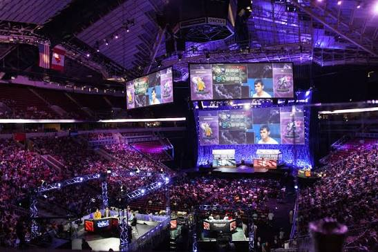
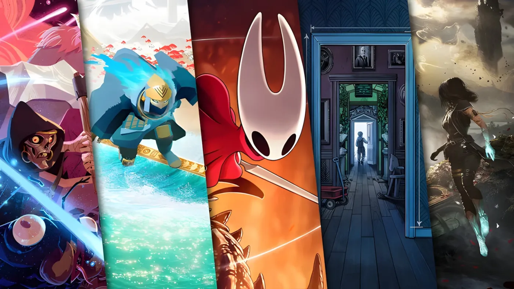

Aventura / RPG
Mundos Abiertos
Explora mapas gigantescos llenos de misiones secundarias, secretos ocultos y narrativas profundas donde cada decisión importa y transforma tu entorno.
Tu portal definitivo sobre cultura, análisis y evolución de los videojuegos
Explora las experiencias más influyentes que definen la industria moderna de los videojuegos, desde mundos abiertos masivos hasta la escena competitiva global.
Explora mapas gigantescos llenos de misiones secundarias, secretos ocultos y narrativas profundas donde cada decisión importa y transforma tu entorno.

La adrenalina de las partidas clasificatorias, el trabajo en equipo, la estrategia táctica y los reflejos al límite en los torneos más grandes del mundo.

Propuestas independientes que demuestran que una gran historia, dirección artística única y mecánicas originales valen más que un presupuesto millonario.
Cada jugador busca un reto distinto. Estos son los pilares que dominan el catálogo actual:
Enfocados en la velocidad de reacción, precisión y control táctico. Incluyen tanto experiencias en primera persona (FPS) como en tercera persona (TPS) con modos campaña y multijugador.
Permiten crear o personalizar un personaje, subir de nivel, mejorar habilidades y sumergirse en historias épicas con cientos de horas de contenido.
El jugador empieza sin recursos y debe recolectar materiales, construir refugios y adaptarse a entornos hostiles con total libertad creativa.
Desde gestionar ciudades completas o escuadrones en tiempo real hasta simuladores realistas de conducción, deportes y física avanzada.
La tecnología actual permite jugar prácticamente en cualquier lugar y conectar con amigos sin importar el dispositivo:
El máximo referente en personalización, tasas de cuadros por segundo (FPS) desbloqueadas, soporte para mods, ray tracing y compatibilidad con múltiples periféricos.
Arquitecturas optimizadas con discos SSD ultrarrápidos, tiempos de carga casi inexistentes, resolución 4K y catálogos exclusivos de alto presupuesto.
Consolas híbridas y PCs portátiles que llevan experiencias completas de sobremesa a cualquier parte sin sacrificar calidad de control.
La barrera entre dispositivos desaparece gracias al progreso cruzado y al streaming de videojuegos directo desde servidores de alta velocidad.
Más allá de los gráficos fotorrealistas, los títulos que marcan época comparten cuatro elementos clave:
Controles responsivos y mecánicas intuitivas que se sienten naturales desde el primer segundo.
Bandas sonoras dinámicas y efectos de audio que transmiten tensión, emoción o victoria.
Escenarios con historia propia donde cada rincón recompensa la curiosidad del jugador.
Actualizaciones constantes, eventos especiales y jugadores que mantienen vivo el título por años.